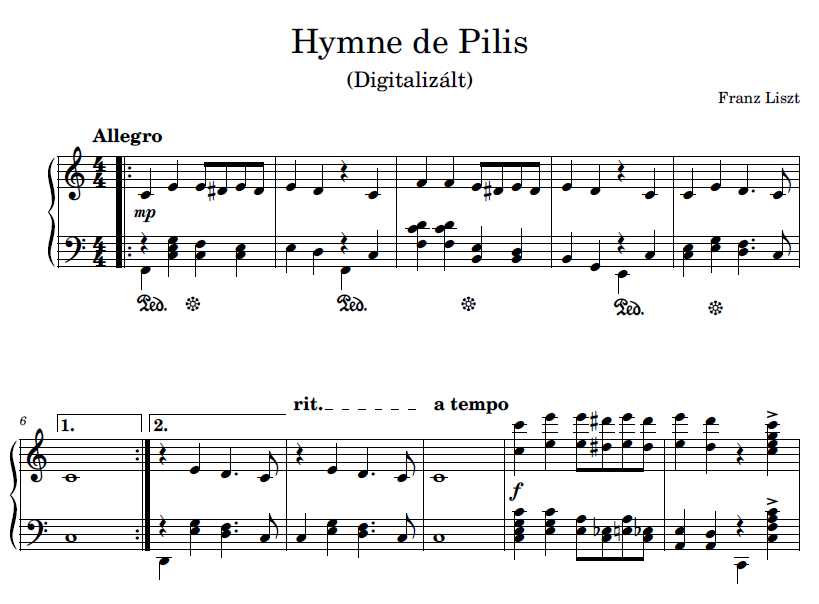
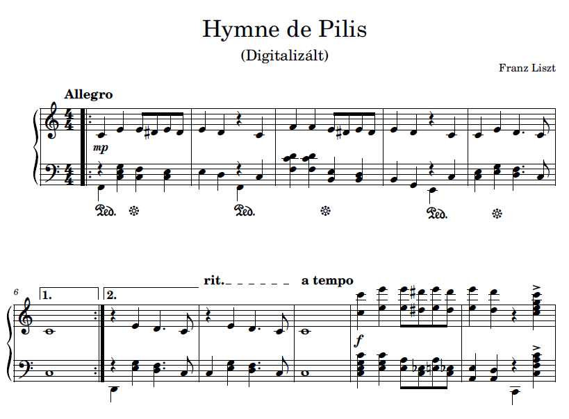

Liszt Ferenc és Pilis.
A történet szerint Liszt Ferenc, Magyarország legnagyobb romantkikus zeneszerzője és zongoristája, egy rövid időre elvonult a Pilis hegyvidéki erdőibe, hogy új zenét komponáljon, elrejtőzve a világ elől. A legenda szerint, amikor elérkezett a pillanat, hogy egy új szimfónia született volna, Liszt e helyen találta meg a nyugodt környezetet, amely lehetőséget adott a zene teljességére. A Pilis csendje és az erdők mélye olyan inspirációval töltötte el, hogy valami egészen különleges művet kezdett el komponálni.
De a zene nem csupán Liszt magánszemélyes megnyilvánulása volt. A hegyek közé rejtett kis ház körüli helyiek, akik a közelben éltek, kezdtek érdeklődni a furcsa látogatók iránt. Liszt híre hamar eljutott hozzájuk, és a falu lakói kíváncsiak lettek arra, hogy ki is az a férfi, aki napokig az erdőben tartózkodik, elzárkózva mindenkitől, miközben zongoráján játszik és komponál.
Ahogy Liszt egyre inkább elmélyült az alkotásban, egyre furcsább dolgok kezdtek történni a környéken. A helyiek, akik addig nem találkoztak művészekkel és zenészekkel, egyesek szerint megzavarták az erdőt, melynek ereje és nyugalma valójában Liszt zenei inspirációjának forrása volt. A közösségben élők egyre inkább furcsának találták, hogy egy híres zenész elvonul a Pilis szívébe, és próbálták kitalálni, miért van itt.
Azt suttogták, hogy a hegyekben valami ősi erő lakozik, amely a zenétől való zavartalan harmóniát keresi. Az emberek félelmei és bizalmatlansága miatt egyesek úgy vélték, hogy Liszt valami titkos rituálét végez, mások pedig a zene erejétől féltek. Végül egy különös éjjelen a helyiek már nem bírták tovább elviselni a titokzatos jelenlétet, és egy nagyobb csoportban elindultak Liszt háza felé.
Liszt, aki érzékelte a közeledő veszélyt, sietve összecsomagolta dolgait, és a zenét, amelyet már majdnem befejezett, félbe kellett hagynia. A menekülés közben a zongora sorsa is bizonytalanná vált: egyesek azt állítják, hogy Liszt magával vitte a hangszerét, mások szerint a zongora ott maradt, és azóta is a Pilis erdőiben rejtőzködik, mint egy elfeledett művészeti kincs. A félig befejezett zongora darab pedig nem más, mint Pilis himnusza, aminek csak az eleje és a vége lett megírva.
 
